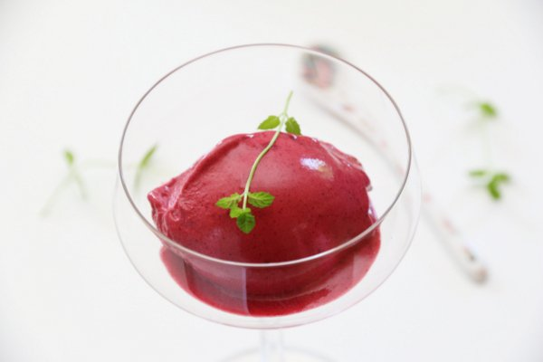
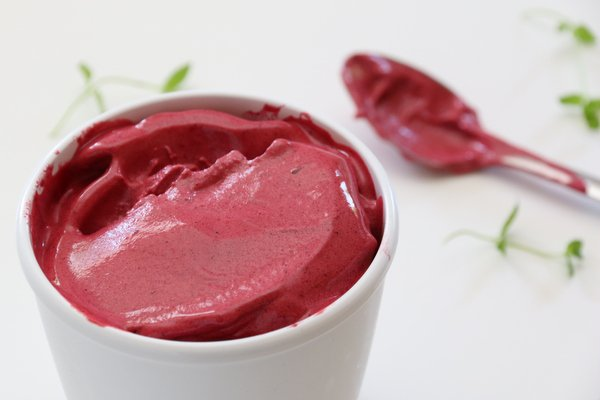
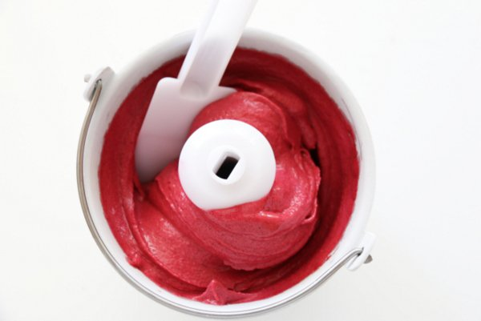

Dessert oppskrifter
SKOGSBÆRSORBET
Det finnes knapt noen bedre dessert enn en kald og frisk sorbet laget av friske skogsbær! Som
for eksempel denne, som i tillegg til å være nydelig på smak også er et fantastisk syn for øyet.
Til ca. 1 liter skogsbærsorbet trenger du:
INGREDIENSER
1 kg skogsbær (feks. bringebær, blåbær og bjørnebær)
2 plater gelatin
1/2 dl varmt vann (ca.)
225 g sukker (ca.)
1-1 1/2 ss glukose
SLIK GJØR DU

Kjør bærene i en kjøkkenmaskin med kniver, til du får en glatt masse. Hvis du benytter frosne bær
må du tine dem opp helt først. Sil av blandingen og kast de små steinene.
Legg gelatinplatene i kaldt vann i ca. 10 minutter. Klem ut vannet og løs opp gelatinen i det varme
vannet. Bland det sammen med skogsbærpuréen, glukose og sukker (smak til). Gi blandingen et
oppkok og rør til sukkeret har smeltet. Sett blandingen til avkjøling og deretter i kjøleskapet
(gjerne over natten).

Ha blandingen over i en ismaskin, og kjør den til den blir fløyelsmyk og fin.
Nyt sorbeten umiddelbart eller sett den i fryseren en times tid før den skal serveres.